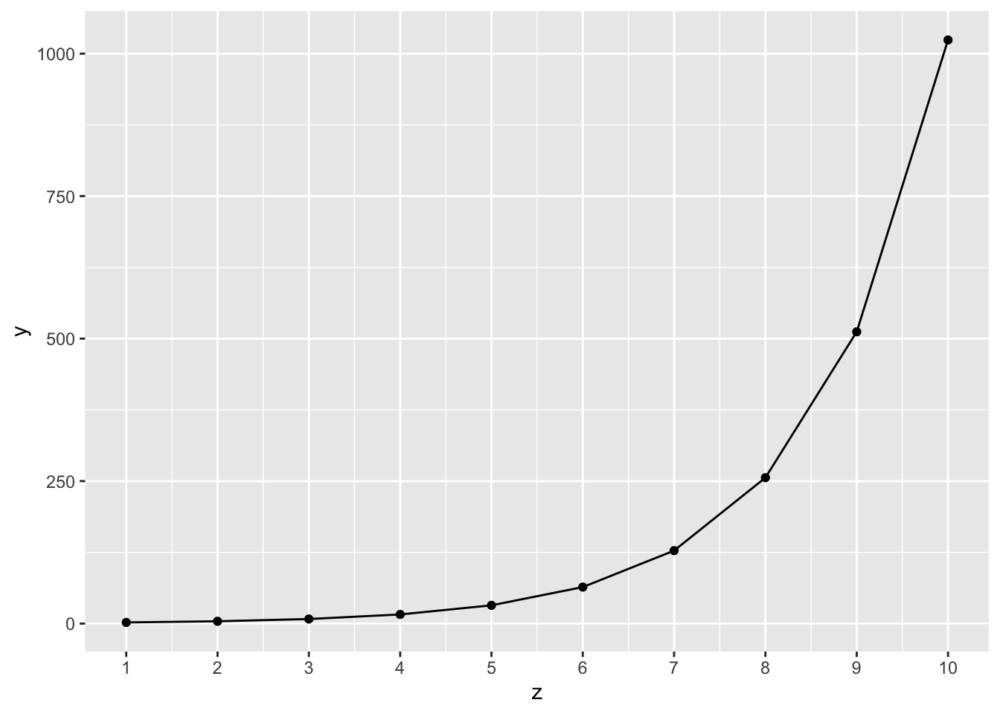
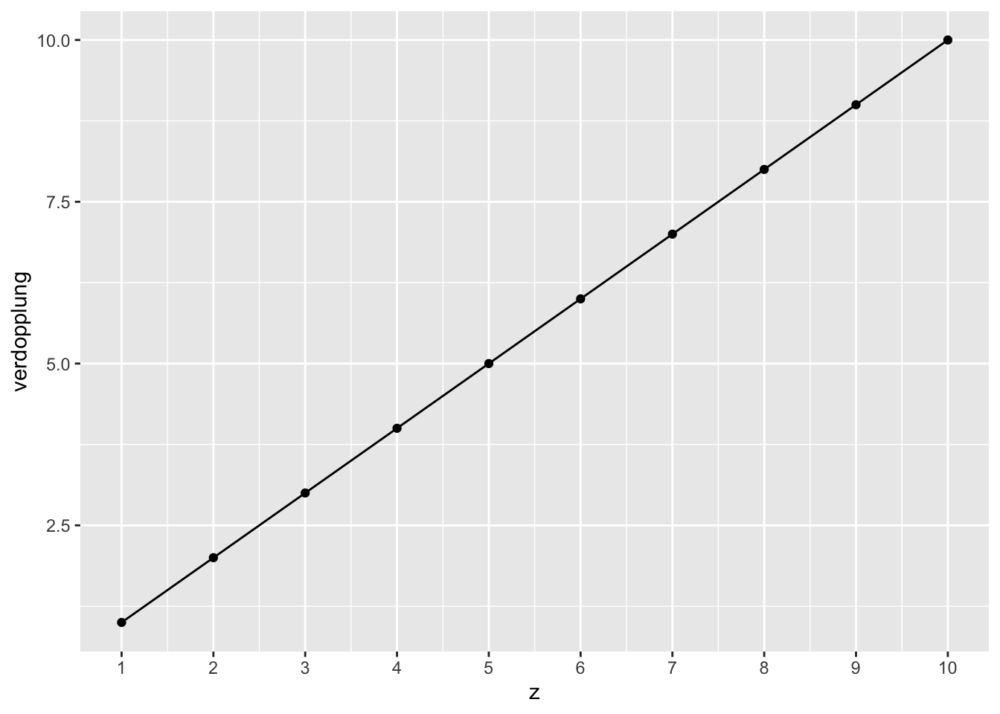
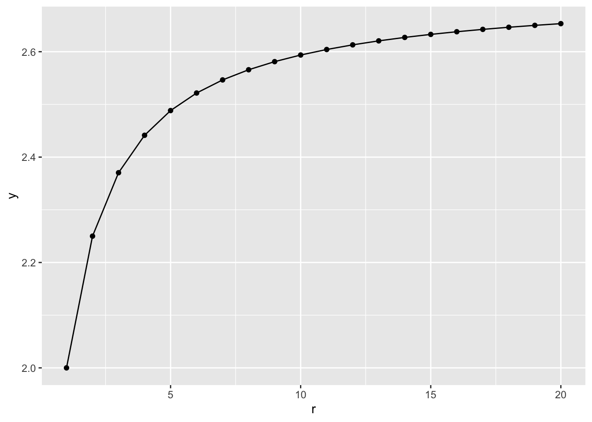
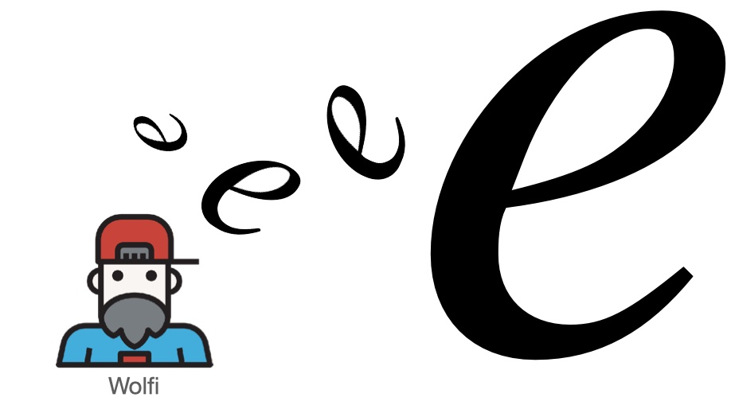

17 Staunen mit e
17.1 Lernsteuerung
17.1.1 Lernziele
- Sie wissen um die Bedeutung von e
- Sie können die Zahl e herleiten
17.1.2 Literatur
17.2 Vorbereitung
In diesem Kapitel werden folgende R-Pakete benötigt:
17.3 Staunen
Staunen ist der Ursprung der Philosophie und damit des Denkens und damit vielleicht der Wissenschaft, wie es vielleicht recht treffend in diesem Cartoon von Doug Savage, 2014 dargestellt ist.
Staunen rührt her vom Moment der Erkennens, dem Auftun von Verständnistiefe.
Und Tiefe des Verständnis findet sich vielleicht am deutlichsten in der Mathematik, meint XKCD.
17.4 Exponenzielles Wachstum
e wie exponenzielles Wachstum: Wachstum mit konstantem Faktor.
Verdoppeln ist eine wohl bekannte Art des exponenziellen Wachsens:
- Ein Virus vermehrt sich während der Zeitperiode \(z\) um den Faktor 2, verdoppelt seine Zahl also.
- Das Kapitel einer Anlage verdoppelt sich während des Zeitraums \(z\).
- Eine Population verdoppelt sich (während eines Zeitraums \(z\)).
Visualisieren wir uns einen exponenziellen Prozess, s. Abbildung 17.1.
d1 <-
tibble(z = 1:10,
y = 2^z)
d1 %>%
ggplot(aes(x = z, y = y)) +
geom_line() +
geom_point() +
scale_x_continuous(breaks = 1:10)
“Verdoppeln” meint das Gleiche wie “Wachsen um 100%”: Faktor 2 entspricht also 100%.
Sagen wir, eine Population mit Startgröße 1 verdoppelt sich drei Mal, Wachstum von 100% über drei Perioden:
\(1 \cdot 2^3 = 8\)
Danach ist die Population also 8 mal so groß wie vorher.
Allgemeiner können wir also schreiben
\(2^x = (1+ 100\%)^x\),
wobei \(x\) die Anzahl der betrachteten Zeitperioden meint.
Wir können auf der Y-Achse auch die Anzahl der Verdopplungen auftragen, denn wir wissen ja, dass pro Zeitperiode eine Verdopplung dazu kommt, nach zwei Zeitperioden also zwei Verdopplungen, nach drei Zeitperioden drei Verdopplungen, nach vier Zeitperioden vier Verdopplungen …
Nur sieht das Diagramm dann dröge aus, s. Abbildung 17.2. Diese Darstellung (Anzahl der Verdopplungsphasen) nennt man auch logarithmische Darstellung.
d1a <-
tibble(z = 1:10,
verdopplung = 1:10)
d1a %>%
ggplot(aes(x = z, y = verdopplung)) +
geom_line() +
geom_point() +
scale_x_continuous(breaks = 1:10)
17.5 Sofortiges Wachstum
Sagen wir, wir bringen ein Kapitel (in Höhe von einer Geldeinheit) zur Bank. Die Bank bietet uns eine traumhafte Verzinsung (r wir Rate) von 100$ pro Jahr.
Um den Zinzeszinseffekt auszunutzen, heben wir das Geld mehrfach unterjährig ab, um es sofort wieder anzulegen, s. Abbildung 17.3.
d2 <-
tibble(
r = 1:20,
y = (1 + 1/r)^r
)d2 %>%
ggplot() +
aes(x = r,
y = y) +
geom_point() +
geom_line()
Können wir mit dieser Methode unendlich viel Geld erzeugen? Tabelle 17.1 gibt eine Antwort.
| x | r | y |
|---|---|---|
| 0 | 1e+00 | 2.000000 |
| 1 | 1e+01 | 2.593742 |
| 2 | 1e+02 | 2.704814 |
| 3 | 1e+03 | 2.716924 |
| 4 | 1e+04 | 2.718146 |
| 5 | 1e+05 | 2.718268 |
| 6 | 1e+06 | 2.718280 |
| 7 | 1e+07 | 2.718282 |
| 8 | 1e+08 | 2.718282 |
| 9 | 1e+09 | 2.718282 |
| 10 | 1e+10 | 2.718282 |
Wenn \(r\) gegen unendlich geht:
\[w = e=\lim _{n\to \infty }\left(1+{\frac {1}{r}}\right)^{r}\]
\(e\) ist das maximale Wachstum, dass man mit sofortiger, stetiger Verzinsung erreichen kann.
17.6 Andere Wachstumsraten
50% Wachstum:
\[\left(1+{\frac {.50}{50}}\right)^{50}=(1+0.01)^{50} \approx 1.64\]
Etwas genauer:
(1 + (.50/50))^50
## [1] 1.64463250% Wachstum bedeutet also 50 Phasen mit je 1% Wachstum …
Moment, wenn wir 100% Wachstum so darstellen, also als 100 Wachstumsphasen mit je 1% Wachstum:
\[\left(1+{\frac {1.00}{100}}\right)^{100}=(1+.01)^{100} \approx e\]
(1 + (1.00/100))^100
## [1] 2.70481417.7 Wachstum mit Basis e
Zwei Perioden Wachstum mit sofortiger, stetiger Verzinsung (100%) erhöht das Kapitel um den Faktor \(e^2\). Beginnt man mit dem Kapitel 1, so beträgt das Endkapitel (Wachstum):
\[w = e \cdot e = e^2\]
Wächst das Kapitel aber nur mit 50%, so gilt (für zwei Zeitperioden):
\[w= e^{0.5 \cdot 2} = e^1\]
Allgemeiner:
Das Wachstum \(w\) nach \(t\) Perioden und Wachstumsfaktor \(r\) beträgt e hoch dem Produkt von \(r\) und \(z\):
\[w=e^{r\cdot t}\]
17.8 Logarithmus
Wächst eine Größe stetig (mit 100%) für \(t\) Zeiträume, so ist der resultierende Wachstumswert \(w = e^r\). Der Logarithmus (zur Basis \(e\)) liefert den Exponenten, \(r\) zurück.
Wachstum für zwei Perioden:
w <- exp(2)
w
## [1] 7.389056Wie viele Perioden waren es noch mal?
log(w)
## [1] 2Wie lange dauert es, bis wir das Kapitel verdoppelt haben (stetige Verzinsung mit 100%)?
log(2)
## [1] 0.6931472Es dauert ca. 0.7 Zeitperioden bis zur Verdopplung.
17.9 Regel der 72
Von dieser Zahl her rührt die “Regel der 72”.
72 lässt sich angenehm teilen (2,3,4,6,12, …), besser als 69.31…
17.10 Fazit
